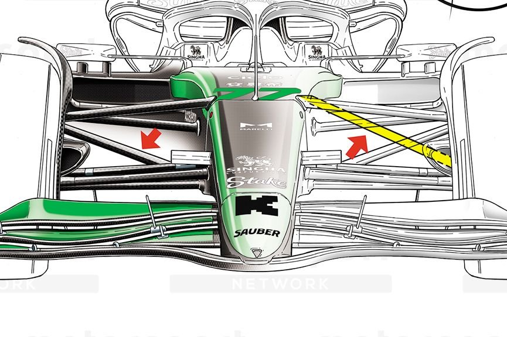
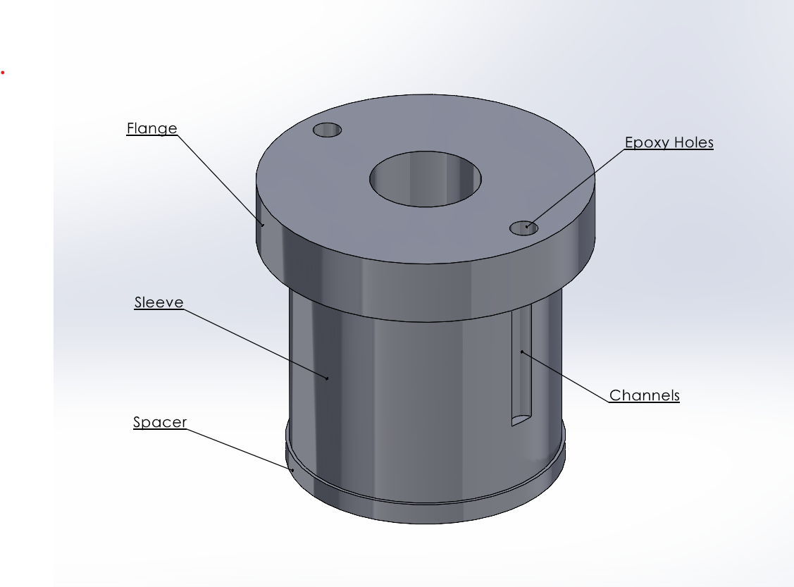
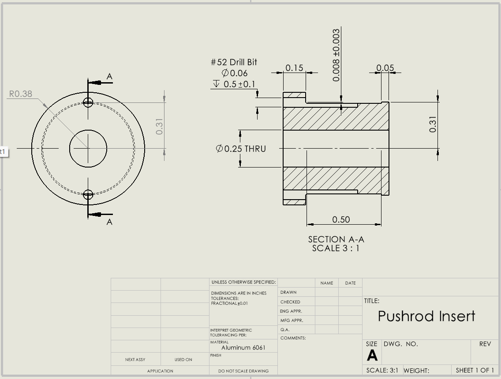
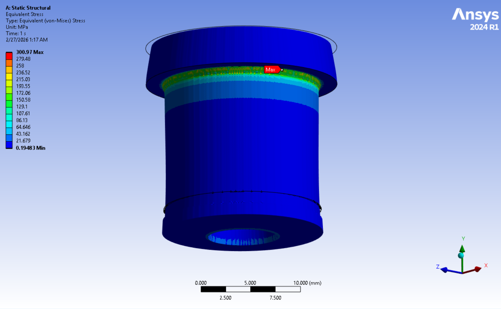
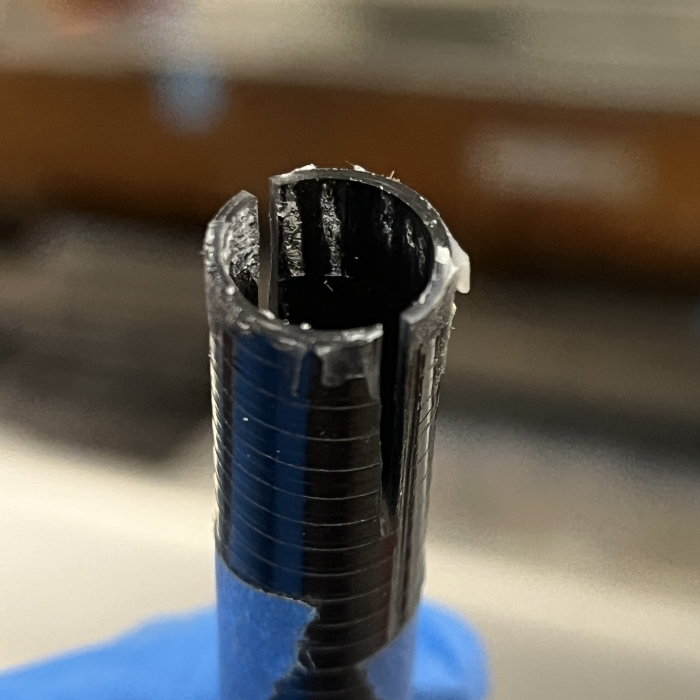
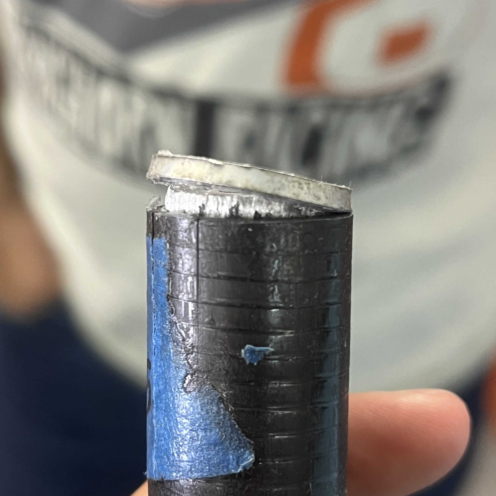
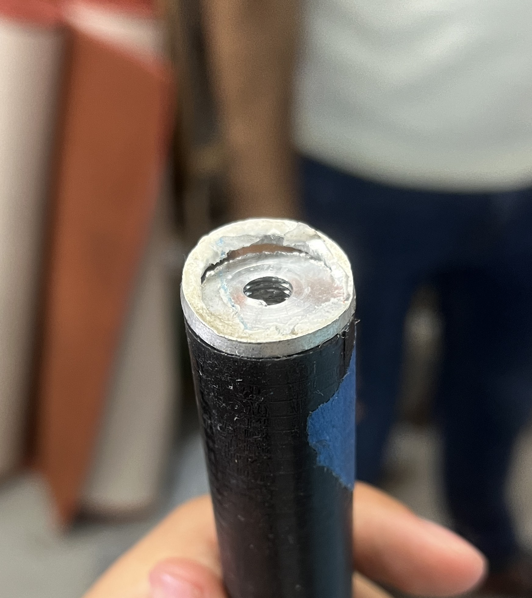

Overview
Our next-generation car replaces its aluminum suspension pushrods with carbon fiber to cut weight without giving up structural performance. I owned the research, insert design, bonding strategy, and experimental validation — and, when the results came back short, the decision to change how we were testing.

Tools & Methods
- CAD modeling and engineering drawings
- FEA in ANSYS Mechanical (ACP)
- Tensile testing to failure on an Instron
- Compression testing in a hydraulic press
- Insert machining on a manual lathe; epoxy bonding and composite manufacturing
- ASTM D5868 lap-shear coupons
Engineering Challenges
- Carbon fiber is strong in tension but weak in compression and shear
- The tube can't be threaded, so a bonded insert is required
- The aluminum-to-composite bond has to be reliable, including after heat soak in a parked car
- Fiber continuity has to be preserved while still allowing assembly
Design & Decisions
Material Selection
Purchased carbon tube from Rock West Composites and bonded an in-house machined aluminum insert with Loctite EA E-120HP. Most candidate epoxies lost strength around 50 °C; E-120HP was chosen for its high lap-shear strength and retention at the temperatures a car sitting in the Texas sun actually sees.
Bonded Insert System
An internal aluminum sleeve transfers load from the composite tube to a bolted joint without cutting fibers.
Insert Geometry
Insert length was sized from epoxy lap-shear data to maximize bond strength while minimizing added weight. Internal channels in the insert ensure full adhesive coverage without drilling into the tube.
Failure Strategy
Designed for a controlled failure progression:
Cohesion → Adhesion → Composite → Insert
Surface Preparation
Investigated abrasion and chemical treatments to improve bonding between aluminum and carbon fiber.



Testing & Results
Tensile Testing
Initial tests reached about 5% of predicted strength because of poor adhesion. Adding silica filler raised this to about 30%. Adhesive failure remained the limiting factor — the composite tube and the insert were both fine; the bond between them was not.

Compression Testing
The insert flange failed before the composite tube, indicating the insert was under-strength. Local splitting in the tube pointed to hoop-stress limits, and shear failure was also observed.


Changing the Test Program
Every pushrod test article required six inserts turned on a manual lathe — about three hours of machining to learn one thing about the adhesive. Since the bond, not the geometry, was the problem, I pivoted the program to ASTM D5868 lap-shear coupons: flat carbon samples bonded to aluminum. Six coupons take about an hour to make, cut, and bond, so surface-prep and adhesive variables can be iterated three times faster and at a fraction of the cost. Only once the coupon-level bond is solved does it make sense to return to full inserts.
Key Takeaways
- Adhesive bonding is the primary failure mode in composite-metal joints
- Surface preparation has a major effect on performance
- Insert geometry strongly influences load transfer and failure behavior
- The composite members outperformed expectations; the joints govern reliability
- When the expensive test keeps telling you the same thing, find a cheaper test that asks a sharper question